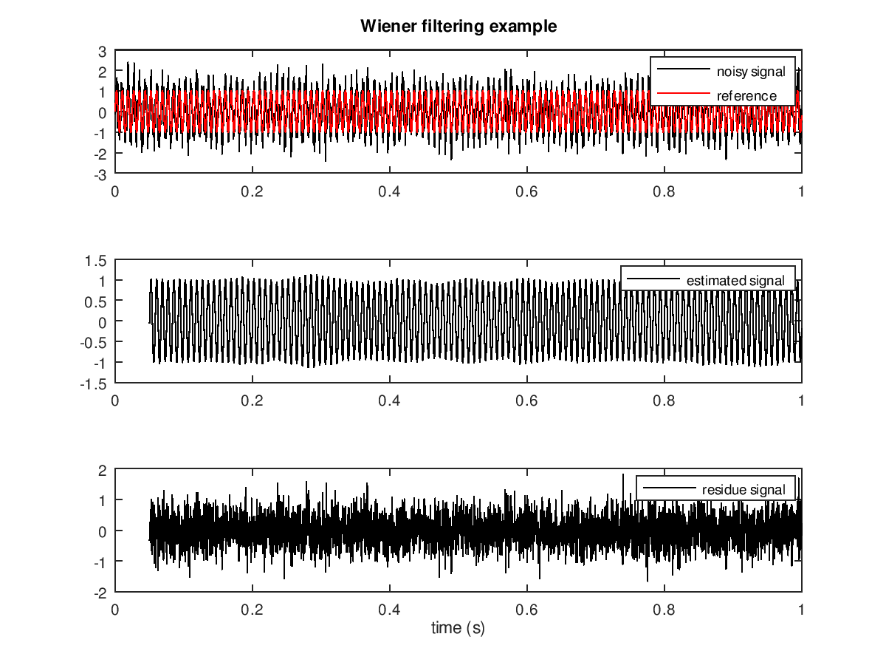

A simple mathematical representation of Brownian motion,
the Wiener equation, named after Wiener,
assumes the current velocity of a fluid particle fluctuates randomly.
For signal processing, the Wiener filter is a filter proposed by Wiener during the 1940s and published in 1942 as a classified document. Its purpose is to reduce the amount of noise present in a signal by comparison with an estimate of the desired noiseless signal. Wiener developed the filter at the Radiation Laboratory at MIT to predict the position of German bombers from radar reflections. It is necessary to predict the position, because by the time the shell reaches the vicinity of the target, the target will have moved, and may have changed direction slightly. They even modeled the muscle response of the pilot, which led eventually to cybernetics. The unmanned V1's were particularly easy to model, and on a good day, American guns fitted with Wiener filters would shoot down 99 out of 100 V1's as they entered Britain from the English channel, [citation needed] on their way to London. What emerged was a mathematical theory of great generality—a theory for predicting the future as best one can on the basis of incomplete information about the past. It was a statistical theory that included applications that did not, strictly speaking, predict the future, but only tried to remove noise. It made use of Wiener's earlier work on integral equations and Fourier transforms.
Wiener took a great interest in the mathematical theory of Brownian motion (named after Robert Brown) proving many results now widely known such as the non-differentiability of the paths. Consequently,the one-dimensional version of Brownian motion was named the Wiener process. It is the best known of the Lévy processes, càdlàg stochastic processes with stationary statistically independent increments, and occurs frequently in pure and applied mathematics, physics and economics (e.g. on the stock-market). Wiener's tauberian theorem, a 1932 result of Wiener, developed Tauberian theorems in summability theory, on the face of it a chapter of real analysis, by showing that most of the known results could be encapsulated in a principle taken from harmonic analysis. In its present formulation, the theorem of Wiener does not have any obvious association with Tauberian theorems, which deal with infinite series; the translation from results formulated for integrals, or using the language of functional analysis and Banach algebras, is however a relatively routine process. The Paley–Wiener theorem relates growth properties of entire functions on Cn and Fourier transformation of Schwartz distributions of compact support. The Wiener–Khinchin theorem, (also known as the Wiener – Khintchine theorem and the Khinchin – Kolmogorov theorem), states that the power spectral density of a wide-sense-stationary random process is the Fourier transform of the corresponding autocorrelation function. An abstract Wiener space is a mathematical object in measure theory, used to construct a "decent", strictly positive and locally finite measure on an infinite-dimensional vector space. Wiener's original construction only applied to the space of real-valued continuous paths on the unit interval, known as classical Wiener space. Leonard Gross provided the generalization to the case of a general separable Banach space. The notion of a Banach space itself was discovered independently by both Wiener and Stefan Banach at around the same time.[29] The Norbert Wiener Center for Harmonic Analysis and Applications (NWC) in the Department of Mathematics at the University of Maryland, College Park is devoted to the scientific and mathematical legacy of Norbert Wiener. The NWC website highlights the research activities of the center. Further, each year the Norbert Wiener Center hosts the February Fourier Talks, a two-day national conference displaying advances in pure and applied